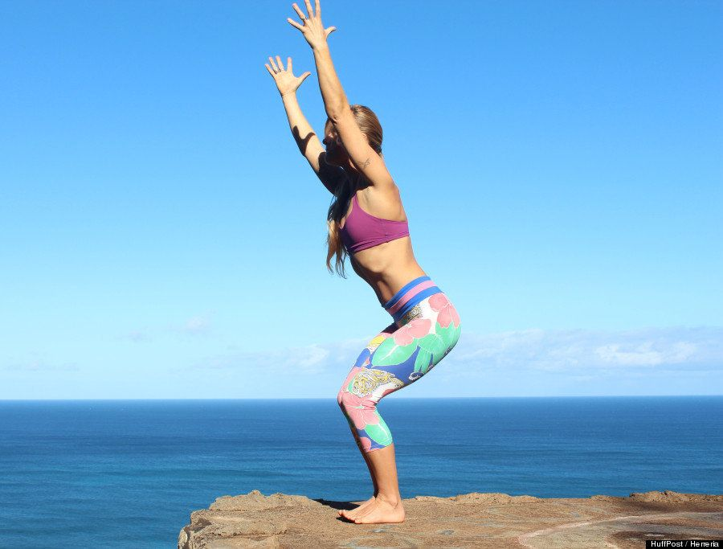

Postura de la silla (Utkatasana)
Las rodillas flexionadas a la altura de los tobillos, los muslos tan paralelos al suelo como sea posible. El torso debería formar un ángulo recto con los muslos. Acerca los pies para formar una postura más avanzada. Inspira a medida que alzas las manos.
Errores comunes: Las rodillas no deberían estar por delante de los pies.
Sochocki dice:"Desplaza más peso a los talones para tirar de las rodillas y que no asomen por delante de los pies".